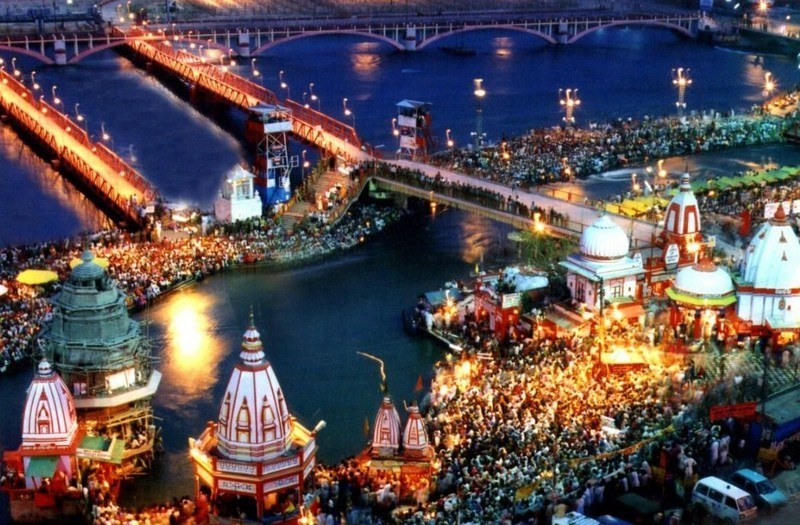

Uttarakhand, a state in northern India crossed by the Himalayas, is known for its Hindu
pilgrimage sites. Rishikesh, a major centre for yoga study, was made famous by
the Beatles' 1968 visit.
The city hosts the evening Ganga Aarti, a spiritual gathering on the sacred Ganges River.
popular places in Uttarakhand
 kedarnath :-
kedarnath :- Another Char Dham pilgrimage site, Kedarnath is known for
the Kedarnath Temple, one of the holiest shrines in Hinduism.
It is situated amidst the Garhwal Himalayas.
 Badrinath :-
Badrinath :-
One of the Char Dham pilgrimage sites, Badrinath is a sacred town situated in
the Chamoli district.
The Badrinath Temple, dedicated to Lord Vishnu, is a significant religious site.
most languages used : Kumaoni , Garhwali, Hindi. food : Bhang Ki Chutney , Gahat Ki Dal.

Haridwar :-
A major pilgrimage site and one of the seven holiest places in Hinduism,
Haridwar is situated on the banks of the Ganges River. It is known for
the Ganga Aarti, a religious ceremony held at the ghats.
 Rishikesh:-
Rishikesh:-
Often referred to as the "Yoga Capital of the World," Rishikesh is a spiritual
and adventure destination on the banks of the Ganges. It is famous for its ashrams,
yoga retreats,
and the iconic Laxman Jhula and Ram Jhula bridges.
Additional Place in Uttarakhand for visit
*Dehradun:
The capital city of Uttarakhand,
Dehradun It serves as a gateway to popular hill stations like Mussoorie and Chakrata.
*Nainital:
Nainital is known for its beautiful lakes, including Naini Lake, and offers boating,
trekking, and stunning views of the surrounding mountains.
*Mussoorie:
Mussoorie is a charming hill station with colonial architecture,
scenic landscapes, and a pleasant climate.
*Valley of Flowers National Park:
this national park is known for its diverse flora and fauna, including numerous species of flowers.
* Jim Corbett National Park:
Jim Corbett National Park is famous for its rich wildlife.

piyush chaubey :- for hiring or about me click the link :-
Piyush portfolio
prashant dwivedi :- for hiring or about me click the link :-
Prashant portfolio
Contact us: xyz@gmail.com
© copyright reserved since 2023